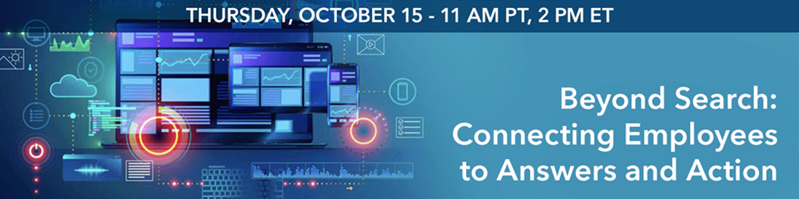

Enterprise knowledge is scattered across Microsoft 365, SharePoint, intranets, business applications, and other repositories. Traditional search often leaves employees to determine where to look, what to ask, and which information to trust.
Conversational AI can create a more intuitive experience, but a conversational interface alone cannot overcome fragmented or poorly governed information. Organizations must connect employee intent with trusted knowledge, personalized context, AI capabilities, and workplace tools.
Join us to explore how enterprises can move beyond keywords and search results to connect employees with the right answer, resource, agent, system, or action.
You'll Learn:
Who Should Attend?
Knowledge management, enterprise search, internal comms, digital workplace, IT, AI, employee experience, information governance, Microsoft 365, SharePoint, and Copilot leaders.
Register Now to attend the webinar Beyond Search: Connecting Employees to Answers and Action.
Don't miss this live event on Thursday, October 15, 11 am PT / 2 pm ET.
Troy Trudel
Employee Experience Expert
Akumina
Marydee Ojala
Editor-in-Chief
KMWorld magazine